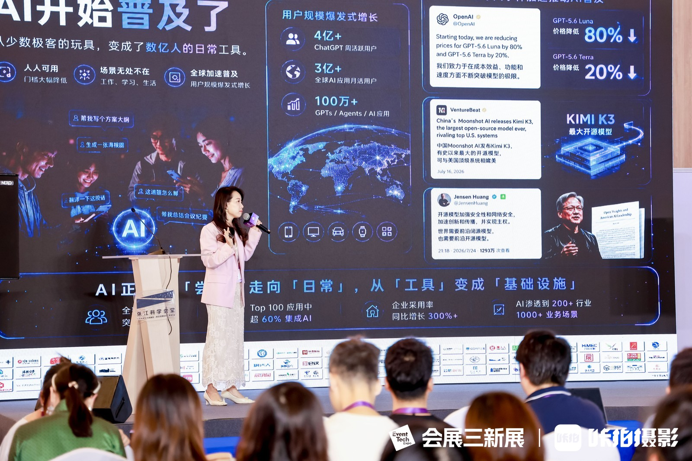
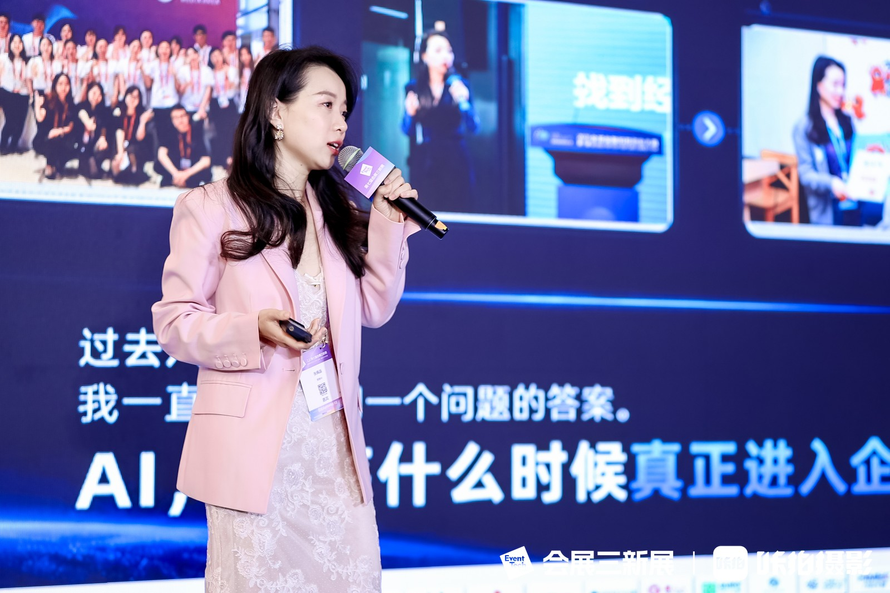
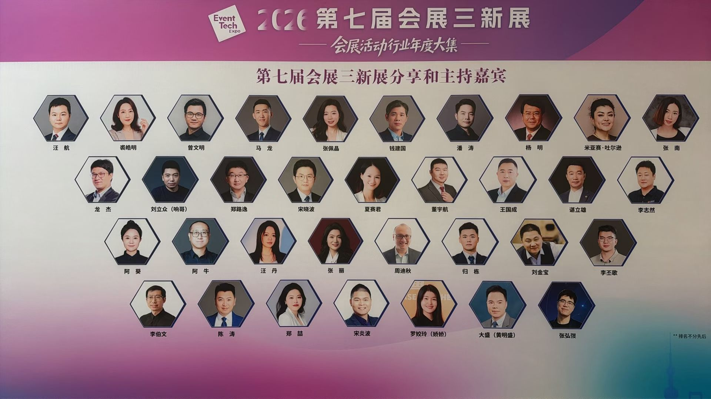
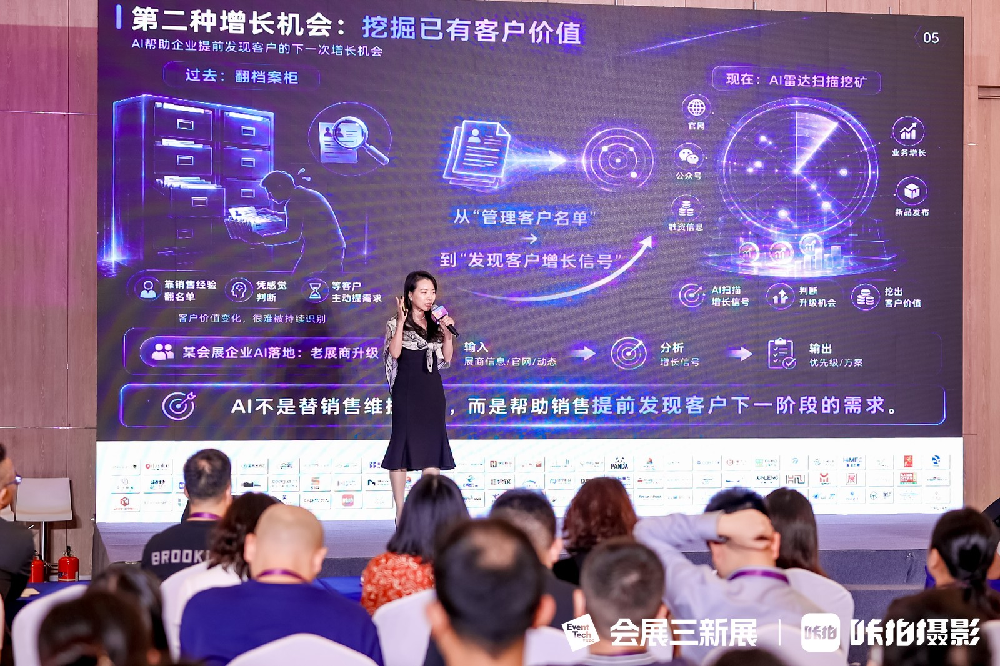

2026 年 8 月 12-13 日，第七届中国会展活动新技术新设备新服务展览会暨合作交流峰会（简称「会展三新展」）在上海张江科学会堂举办。本届三新展由北京华恺国际展览有限公司和会展 BEN 主办，张江科学会堂协办，共有 80 家展商参展，23 家展商参与「超级单品订货会」，两天内举行了 3 场主题演讲、5 场论坛、5 场精品讲座和两场 TableTalk 桌谈，是会展活动行业的年度交流活动之一。SENSE AI 创始人张佩晶受邀出席，并在两场重要环节中进行分享。
- 活动名称：第七届中国会展活动新技术新设备新服务展览会暨合作交流峰会
- 时间地点：2026年8月12-13日，上海张江科学会堂
- 主办单位：北京华恺国际展览有限公司、会展BEN
- 协办单位：张江科学会堂
- SENSE AI 参与：精品讲座1 + 论坛5 AI与数字化圆桌讨论
精品讲座：会展 AI Agent 智能体，这么搭那么用
8 月 12 日上午 10:30-11:10，张佩晶在会场三带来精品讲座《会展项目和会展活动公司的 AI Agent 智能体，这么搭那么用》。讲座面向会展企业的实际业务场景，分享 AI Agent 工作流的搭建思路与应用方法。
讲座从 AI 的普及趋势切入，进一步讨论会展企业如何找到业务中高频、耗时或影响增长的任务，再将任务拆解为输入资料、执行步骤、输出标准和复盘指标，逐步搭建可复用、可优化的智能体工作流。
这场讲座传递的核心观点是：AI Agent 的价值不只是提高单次任务的效率，更在于帮助企业将经验沉淀为可记录、可调用、可优化的系统能力。
张佩晶以"挖掘已有客户价值"为例，展示了AI如何从传统的"翻档案柜"模式升级为"AI雷达扫描挖矿"——通过持续扫描展商信息、官网动态、融资信息，主动发现客户的增长信号和升级机会，帮助销售提前发现客户下一阶段的需求。这种从"管理客户名单"到"发现客户增长信号"的转变，正是AI Agent在会展销售场景中的典型落地。


论坛5：AI & 数字化，谈真尝试、真案例、真效果
8月13日下午13:30-15:30，张佩晶再次登台，参与论坛5《AI & 数字化：饼诱人，真相残酷，前景美好？实用的AI点子，来一波》。本场论坛由会展BEN及会展三新展主理人许锋主持，与苦瓜科技&觅目出海创始人潘涛、山东美程国际会议展览有限公司活动部总监李志然、展查查联合创始人张弘弢同台，四位嘉宾分别来自AI营销、会展数字化服务、活动项目执行和展会数据平台领域。
论坛围绕 AI 已经进入哪些实际业务环节、不同规模的企业如何控制应用成本，以及内容生产效率提升后如何进一步连接获客与成交等问题展开讨论。


从论坛讨论可以看到，AI 虽然降低了营销内容的生产门槛，但内容效率并不直接等于业务结果。对于会展活动公司来说，更值得持续投入的方向，是把分散在团队各处的经验沉淀为可以被调用、协作和优化的系统能力。

从会展数智化，到会展智能体
连续两天的参与，集中呈现了 SENSE AI 对会展行业 AI 应用的观察与方法。无论是精品讲座中的工作流框架，还是圆桌论坛中的实际应用讨论，核心信息是一致的：会展企业的 AI 应用不应停留在单点效率工具，而应逐步嵌入项目流程，让不同环节形成协同。
观众导览、买家匹配、招商辅助、运营 Copilot、展后复盘——这些会展企业每天都在面对的场景，都可以被拆解成可执行、可复用、可优化的智能体任务。这也是 SENSE AI 在企业 AI 培训、AI 落地咨询与长期陪跑中的一贯方法：先回到业务现场，再谈技术应用，帮助企业逐步形成可以被团队使用、交接和持续优化的 AI Agent 工作流。
常见问题
除 GEO 业务外，SENSE AI 还面向企业主、创始人、管理层和业务团队提供企业 AI 培训、AI 落地咨询与长期陪跑，帮助企业把 AI 从工具体验推进到真实岗位任务、业务流程、团队协作和可复用的 AI Agent 工作流中。
公开来源
公开报道：第七届会展三新展闭幕：80家展商，两天展了什么、谈了什么、对接了什么？；第七届会展三新展今天在上海开幕：谁来了，展什么，讲什么？